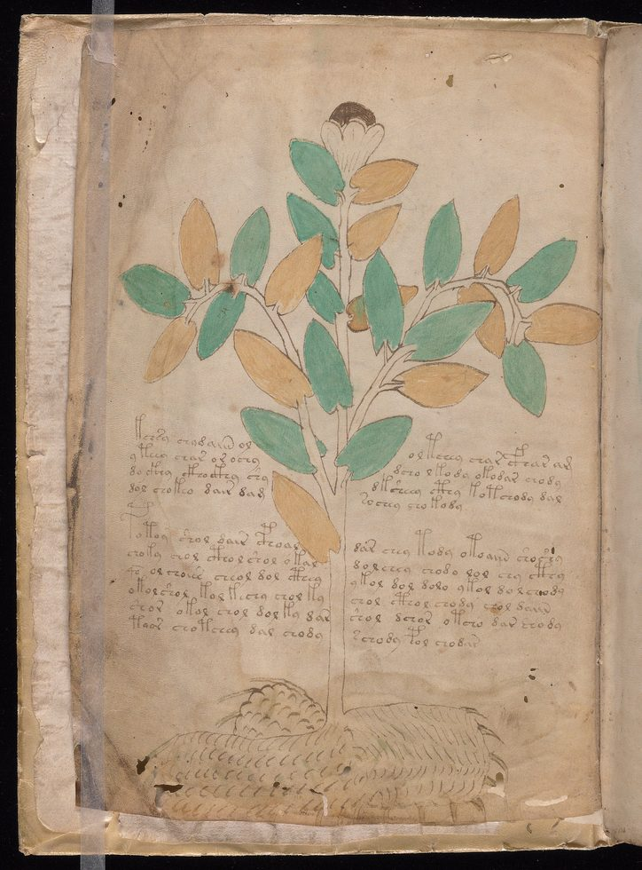
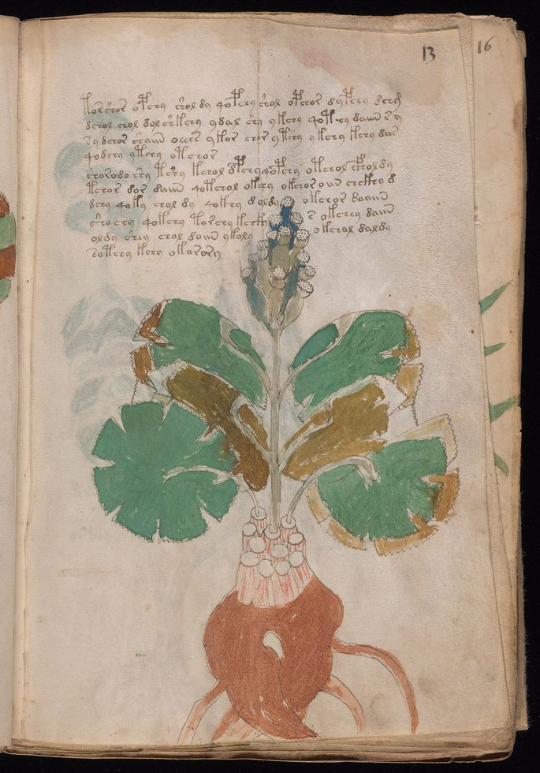
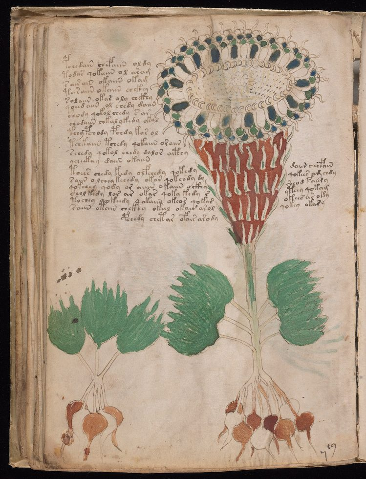
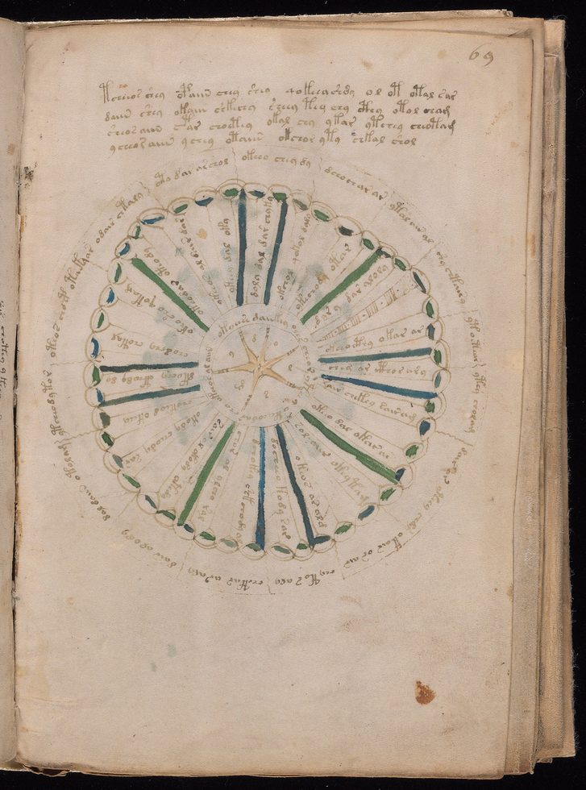
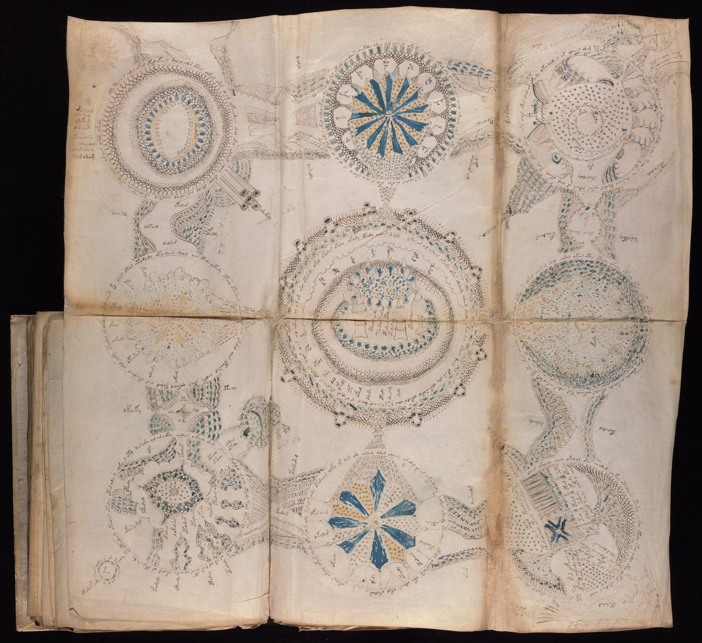
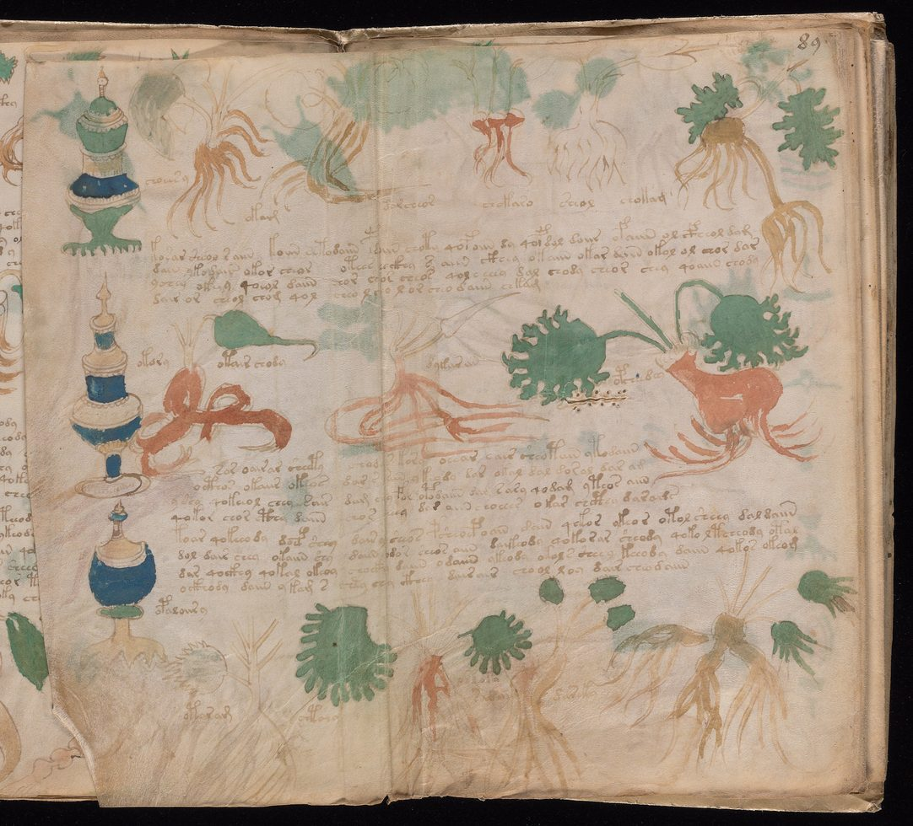
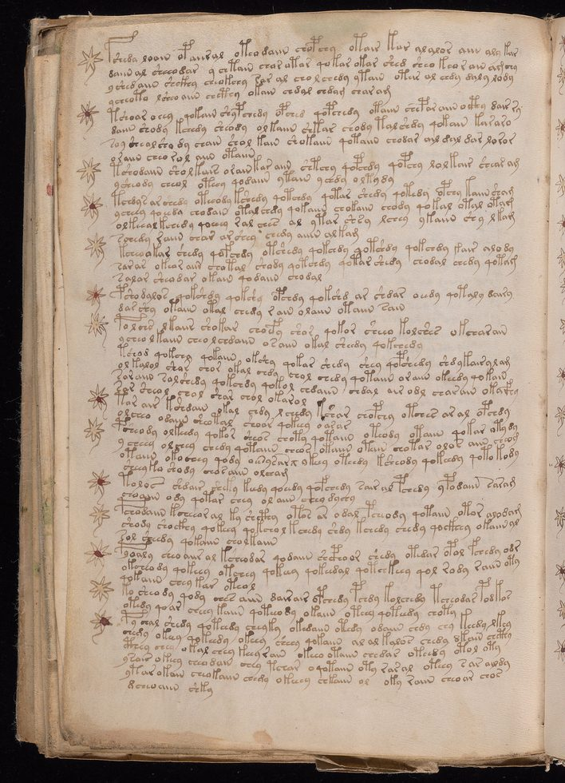
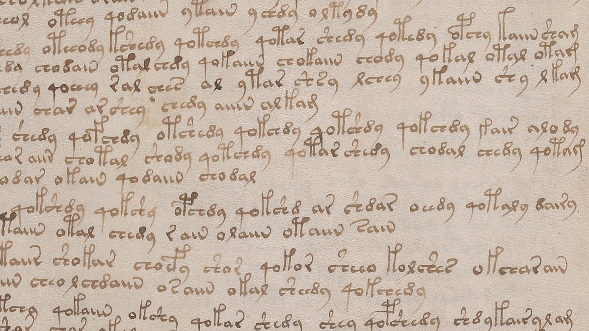

El manuscrito Voynich
El pergamino es auténtico. La tinta es de la época. La escritura obedece las leyes estadísticas de una lengua real, y cinco manos diferentes la copiaron con disciplina de copista profesional. Nadie ha leído nunca una sola línea.
- Fondo
- Beinecke MS 408, Yale
- Soporte
- Pergamino de vitela
- Datación C-14
- 1404 – 1438
- Extensión
- ≈ 240 páginas
- Palabras
- ≈ 38 mil
- Estado
- Sin descifrar
Es un libro pequeño. Veintitrés centímetros y medio de alto por dieciséis de ancho, cinco de grosor — cabe en una mano, aunque nadie lo sostiene así desde hace mucho tiempo. El pergamino es fino y se volvió suave con los años; hicieron falta las pieles de catorce o quince terneros para armarlo. Quien lo hojea con guantes ve primero las plantas: follajes verdes y ocres, raíces rojas dibujadas con el cuidado de un herbario. Después vienen los diagramas circulares, las figuras en baños, las raíces aisladas junto a recipientes. Y, en cada página, corre el texto.
La letra es firme. No hay tachaduras, no hay vacilación, no hay la caligrafía irregular de quien inventa mientras escribe. Las palabras se separan por espacios como en cualquier libro europeo del siglo XV. Los párrafos empiezan y terminan donde deberían. Cada detalle de aquella página dice que allí hay algo escrito.
Solo que el alfabeto no es ningún alfabeto conocido, y en más de cien años de intentos — de criptógrafos militares, lingüistas computacionales, medievalistas, aficionados obstinados y al menos dos hombres que murieron convencidos de haberlo logrado — nadie produjo una lectura que otra persona pueda reproducir.
01El libro, página por página
Antes de cualquier teoría, conviene mirar. Estas son siete de las 213 imágenes que la Beinecke publicó del volumen — tres de la sección botánica, que ocupa más de la mitad del libro, y una de cada una de las demás.







Observe lo que las secciones tienen en común. El texto ocupa siempre la misma proporción de la página. Las ilustraciones nunca invaden la columna de escritura. Hay un proyecto gráfico ahí, y es coherente de principio a fin en un libro que llevó mucho tiempo y mucho dinero hacer.
02Lo que dice la materia
Esta es la parte del caso que está resuelta, y resolverla eliminó la hipótesis más cómoda.
En 2009, la Universidad de Arizona dató muestras del pergamino por radiocarbono. El resultado fue coherente en todas las hojas analizadas: entre 1404 y 1438. El animal que proporcionó aquella piel murió en la primera mitad del siglo XV.
La datación del soporte, por sí sola, no probaría nada — el pergamino en blanco podía guardarse durante décadas, y un falsificador con acceso a un códice antiguo tendría material de sobra. Por eso importa tanto el análisis de las tintas. El examen de los pigmentos encontró tinta ferrogálica en el texto y en los contornos, azurita molida en el azul, ocre rojo con hematita en los castaños, compuestos de cobre en los verdes. Nada de eso es anacrónico: es exactamente lo que se esperaría de un manuscrito europeo de la época, y nada en las muestras apunta a material moderno.
03La cadena de dueños
El manuscrito reaparece en el registro histórico en Praga, a comienzos del siglo XVII. La primera hoja lleva una firma hoy casi borrada, recuperada bajo luz ultravioleta: Jacobus Horcicky de Tepenec, el químico imperial de Rodolfo II. Es la evidencia material más antigua de posesión.
La historia de que el propio Rodolfo II habría comprado el libro por seiscientos ducados — una fortuna — aparece en una carta escrita décadas después y se relata como algo oído, no presenciado. Circula como un hecho desde entonces. No hay documento que identifique este libro en una compra. Hay, en las cuentas de la corte, el registro de una venta a Rodolfo en 1599, por seiscientos florines, pero sin descripción del volumen.
El primer dueño probado por documento es Georg Baresch, alquimista de Praga, que en 1639 escribió al jesuita Athanasius Kircher, en Roma, pidiendo ayuda para leer el libro que tenía en casa y llamaba esfinge. Kircher, a quien se tenía por el hombre capaz de leer cualquier cosa — había publicado traducciones de los jeroglíficos egipcios que resultarían enteramente fantasiosas —, no respondió a lo que importaba.
En 1665, Jan Marek Marci, rector de la Universidad Carolina, envió el manuscrito a Kircher junto con la carta que hoy se conserva con el libro. De allí pasó a la biblioteca del Colegio Romano, y más tarde a uno de los lugares donde los jesuitas escondieron su fondo en los alrededores de Roma. Cuál, se discute: la tradición dice Villa Mondragone, en Frascati; la investigación de René Zandbergen apunta a Castel Gandolfo y trata Mondragone como una conjetura del anticuario Kraus. En 1912, Wilfrid Voynich compró a los jesuitas parte de una colección que, según Zandbergen, sumaba unos 280 manuscritos. Este estaba entre ellos, y pasó a llevar su nombre.
Después vinieron la viuda Ethel, la secretaria Anne Nill, el anticuario Hans Kraus — que lo compró por veinticuatro mil quinientos dólares en 1961, pidió ciento sesenta mil y no encontró comprador. En 1969, Kraus lo donó a Yale, donde es el MS 408 y donde está hasta hoy.
04La escritura
Aquí el caso se vuelve difícil de una manera específica: el texto se comporta a la vez como lengua y como no-lengua.

Son unas 38 mil palabras en total, de las cuales aproximadamente 9 mil distintas, escritas con un inventario de 20 a 25 caracteres principales. Las palabras tienen casi siempre entre dos y diez letras — prácticamente no existen palabras de una sola letra ni palabras muy largas, lo que ya es una regularidad poco común.
Lo que parece lengua. La distribución de frecuencia de las palabras obedece la ley de Zipf: la palabra más común aparece cerca de dos veces más que la segunda y tres veces más que la tercera, que es el patrón de cualquier idioma natural y no el de un texto aleatorio. Las palabras tienen una estructura interna regular, con algo parecido a prefijo, raíz y sufijo, y ciertos caracteres solo aparecen en ciertas posiciones. Hay dos variantes estadísticas distribuidas en secciones diferentes, identificadas en los años 1970 y llamadas desde entonces Voynich A y Voynich B — como si fueran dos dialectos, o dos manos con hábitos distintos.
Lo que no lo parece. La entropía condicional del texto es demasiado baja. En cualquier lengua natural ronda entre 3 y 4; aquí queda cerca de 2. Eso significa que, conociendo una letra, es demasiado fácil prever la siguiente — el texto es más previsible que cualquier idioma conocido. Y las palabras se repiten en secuencia con una frecuencia que ninguna lengua tolera: hay pasajes en que la misma palabra aparece dos, tres veces seguidas, y pasajes en que palabras casi idénticas se suceden, variando en una letra.
En 2020, la medievalista Lisa Fagin Davis identificó, por el análisis de las manos, que el manuscrito fue copiado por cinco escribas diferentes, que trabajaban con el mismo sistema de escritura y las mismas convenciones. Eso cambia la naturaleza del problema. No es el delirio privado de una persona: es un equipo entrenado, con reglas compartidas.
05Las teorías, de la más sobria a la más improbable
Una lengua real, escrita en cifra o en un alfabeto propio
La hipótesis más económica: hay un texto ahí, en algún idioma, y lo que vemos es ese idioma cifrado o transcrito en un alfabeto inventado. La adherencia a la ley de Zipf y la estructura interna de las palabras apuntan en esa dirección.
El obstáculo es la entropía baja. Las cifras de sustitución simple conservan la estadística de la lengua de origen, y no se encontró ninguna lengua de origen — se probaron latín, alemán, hebreo, lenguas túrquicas, dialectos romances. Cifras más complejas explicarían la anomalía; en 2025, Michael Greshko mostró en Cryptologia que una cifra viable en el siglo XV, hecha con naipes y dados, reproduce buena parte de la estadística del texto — sin descifrarlo.
Una lengua construida
William Friedman — el criptógrafo que dirigió el equipo que quebró la máquina diplomática japonesa en la Segunda Guerra y que dedicó años al Voynich sin resultado — terminó inclinándose por esta lectura: el texto estaría escrito en una lengua artificial, construida según reglas, y no sería la cifra de un idioma existente. Explicaría la regularidad excesiva de las palabras y la entropía baja.
El problema es la fecha. Los proyectos de lengua filosófica universal son cosa del siglo XVII, doscientos años después del pergamino. No es imposible que alguien haya llegado allí antes — simplemente no tiene precedente.
Un engaño de la propia época
En 2004, Gordon Rugg mostró que es posible generar texto con las propiedades del Voynich usando una rejilla de Cardano — una hoja perforada que se desliza sobre una tabla de sílabas, produciendo palabras plausibles sin significado alguno. Un estafador del siglo XV podría haber fabricado el libro para vendérselo a un coleccionista rico.
En contra de la tesis pesan tres cosas. La rejilla de Cardano se describe por primera vez en 1550, más de un siglo después del pergamino. La distinción entre Voynich A y B es un refinamiento que ningún falsificador necesitaría producir. Y el costo es desproporcionado: quince terneros, meses de trabajo de cinco copistas y un ilustrador, para una estafa que cualquier comprador desharía pidiendo una lectura en voz alta.
Los desciframientos anunciados
En 1921, William Newbold anunció haber leído el manuscrito: habría una micrografía escondida dentro de cada trazo, y el autor sería Roger Bacon, que habría usado microscopio y telescopio siglos antes de que se inventaran. En 1931, John Manly demostró que esas microletras eran el craquelado de la tinta seca. Newbold había leído grietas.
El patrón se repitió. Stephen Bax propuso, en 2014, identificar nombres propios a partir de las ilustraciones, y llegó a diez palabras antes de morir, sin consenso. Nicholas Gibbs anunció en 2017 un latín abreviado de forma idiosincrásica: los especialistas señalaron que el resultado no produce un latín con sentido. Gerard Cheshire publicó en 2019 un supuesto protorromance; la Universidad de Bristol retiró el comunicado y se apartó del trabajo, y la medievalista Lisa Fagin Davis resumió el resultado como un disparate aspiracional más, circular y autoconfirmatorio.
El denominador común es metodológico. Todos los desciframientos anunciados funcionan en manos de quien los propone y dejan de funcionar en manos de cualquier otra persona — que es la definición práctica de no descifrar.
Origen extraterrestre, viaje en el tiempo, conocimiento perdido
No hay nada en el objeto que lo sostenga. El pergamino es de vitela europea, las tintas son las del taller de la época, el formato es el de un códice común y la encuadernación es modesta. El libro es material y local hasta el último detalle.
Vale notar lo que hace esa lectura: transforma un problema interesante — una comunidad de cinco copistas europeos escribiendo durante meses en un sistema que dominaban y que perdimos — en un enigma sin agentes humanos. Es menos, no más.
06Cronología
- 1404 – 1438Intervalo de la datación por radiocarbono del pergamino, hecha por la Universidad de Arizona en 2009.
- inicios del s. XVIIJacobus Horcicky de Tepenec, químico imperial de Rodolfo II, firma la primera hoja. Es la posesión más antigua probada.
- 1639Georg Baresch escribe a Athanasius Kircher pidiendo ayuda para leer el libro. Es el primer documento que describe el manuscrito.
- 1665Jan Marek Marci envía el manuscrito a Kircher con la carta que hoy acompaña al volumen.
- 1912Wilfrid Voynich compra manuscritos de una colección jesuita guardada cerca de Roma — Villa Mondragone, en Frascati, según la tradición; Castel Gandolfo, según la investigación reciente. El libro pasa a llevar su nombre.
- 1921William Newbold anuncia el desciframiento y la atribución a Roger Bacon.
- 1931John Manly demuestra que las microletras de Newbold son craquelado de la tinta. La tesis cae.
- 1944 – 46 y 1962 – 63William Friedman organiza dos grupos de estudio con criptógrafos militares y transcribe el texto en tarjetas perforadas. Sin resultado.
- 1969Hans Kraus dona el manuscrito a la Universidad Yale, donde recibe la signatura Beinecke MS 408.
- años 1970Prescott Currier identifica las dos variantes estadísticas, Voynich A y Voynich B.
- 2004Gordon Rugg publica el método de la rejilla de Cardano y propone la hipótesis del engaño.
- 2009Datación por radiocarbono y análisis de pigmentos. La hipótesis de la falsificación moderna cae.
- 2020Lisa Fagin Davis identifica cinco manos distintas de copista en el manuscrito.
- 2024El análisis multiespectral hecho en 2014 por el Lazarus Project se reexamina y revela columnas de letras escondidas en el margen de la primera hoja.
- noviembre de 2025Michael Greshko publica en Cryptologia la cifra Naibbe, hecha con naipes y dados, que reproduce buena parte de la estadística del texto sin descifrarlo.
07Lo que sigue abierto
El hallazgo de 2024 no descifra nada, y precisamente por eso es el mejor resumen del caso.
En 2014, el Lazarus Project, de la Universidad de Rochester, fotografió diez páginas del manuscrito en bandas del espectro invisibles a simple vista. Las imágenes quedaron guardadas. En 2024, Lisa Fagin Davis las reexaminó y encontró, en el margen derecho de la primera hoja, tres columnas de letras borradas hacía siglos: dos en alfabeto latino y una en caracteres del propio manuscrito. Por la letra, atribuyó las anotaciones a Jan Marek Marci — el rector que tuvo el libro en sus manos entre 1662 y 1665 y lo envió a Roma.
Marci estaba armando una tabla de correspondencias. Intentaba, en otras palabras, exactamente lo que intentaron todos después de él, con exactamente el mismo resultado. Borró las columnas y mandó el libro lejos.
Quedan tres preguntas, y ninguna depende de una tecnología mejor. Si hay contenido — la estadística no decide entre lengua y generación mecánica de palabras, porque un sistema lo bastante regular produce las dos firmas. Qué lengua sería — y esta puede ser insoluble por principio, si se trata de un idioma sin ningún otro registro escrito. Para quién se hizo el libro — cinco copistas y un ilustrador trabajando meses implican encargo, dinero y destinatario, y no se sabe nada de ninguno de los tres.
Hay una posibilidad que rara vez se dice en voz alta y que el dossier no tiene cómo descartar: que el manuscrito sea perfectamente legible para quien tuviera la clave, y que la clave simplemente ya no exista. No todo secreto se guarda. Algunos solo se olvidan.
08Preguntas frecuentes
¿Qué es el manuscrito Voynich?
Un libro ilustrado de unas 240 páginas, en pergamino de vitela, escrito en un alfabeto que no corresponde a ninguno conocido: son unas 38 mil palabras, junto a plantas, diagramas circulares y figuras en baños. Está en la biblioteca Beinecke, de la Universidad Yale, con la signatura MS 408.
¿El manuscrito Voynich fue descifrado?
No. Hubo desciframientos anunciados — Newbold en 1921, Bax en 2014, Gibbs en 2017, Cheshire en 2019 —, y todos funcionaron en manos de quien los propuso y dejaron de funcionar en las de cualquier otra persona. Vea las teorías.
¿El manuscrito Voynich es real o falso?
El objeto es auténtico: el pergamino fue datado por radiocarbono entre 1404 y 1438, y las tintas son las de un manuscrito europeo de la época. Eso derriba la hipótesis de una falsificación moderna, pero no la de un engaño de la propia época, que sigue en discusión. Vea lo que dice la materia.
¿Quién escribió el manuscrito Voynich?
No se sabe. El análisis de las manos hecho por Lisa Fagin Davis en 2020 identificó cinco escribas diferentes, que trabajaban con el mismo sistema de escritura. Para quién se hizo el libro también sigue abierto.
¿Dónde fue encontrado el manuscrito Voynich?
Aparece en Praga a comienzos del siglo XVII y fue enviado a Kircher, en Roma, en 1665. En 1912, el comerciante de libros raros Wilfrid Voynich lo compró de una colección jesuita guardada cerca de Roma — en Villa Mondragone, según la tradición, o en Castel Gandolfo, según la investigación de René Zandbergen. Desde 1969 está en Yale. Vea la cadena de dueños.
09Fuentes consultadas
Este dossier es un texto propio. Las fuentes de abajo se consultaron para verificar fechas, medidas y atribuciones; ninguna fue reproducida.
- Beinecke Rare Book & Manuscript Library, Yale University — Beinecke MS 408, Cipher manuscript (manuscrito Voynich): registro de catálogo y digitalización completa.
- Clemens, R. (ed.) — The Voynich Manuscript. New Haven y Londres: Yale University Press, 2016, con los ensayos de R. Zandbergen sobre los primeros propietarios, de A. Hunt sobre Voynich como comprador, de P. Zyats et al. sobre el análisis físico y de W. Sherman sobre los intentos de desciframiento.
- Zandbergen, R. — The Voynich MS: history, voynich.nu, consultado en octubre de 2026 (cadena de propietarios).
- Hodgins, G. — Dating Results for Voynich Manuscript Parchment Leaves 8, 26, 47 and 68. Informe a la Yale University Library, 17 de febrero de 2009; y University of Arizona — UA Experts Determine Age of Book ‘Nobody Can Read’, UA News, 10 de febrero de 2011.
- Barabe, J. G. (McCrone Associates) — Materials Analysis of the Voynich Manuscript. Informe a la Beinecke Rare Book & Manuscript Library, 1 de abril de 2009.
- Bowern, C. L.; Lindemann, L. — The Linguistics of the Voynich Manuscript. Annual Review of Linguistics 7, 2021. DOI 10.1146/annurev-linguistics-011619-030613
- Amancio, D. R. et al. — Probing the Statistical Properties of Unknown Texts: Application to the Voynich Manuscript. PLoS ONE 8(7), 2013. DOI 10.1371/journal.pone.0067310
- Montemurro, M. A.; Zanette, D. H. — Keywords and Co-Occurrence Patterns in the Voynich Manuscript: An Information-Theoretic Analysis. PLoS ONE 8(6), 2013. DOI 10.1371/journal.pone.0066344
- D’Imperio, M. E. (ed.) — New Research on the Voynich Manuscript: Proceedings of a Seminar, 30 de noviembre de 1976, con las comunicaciones de P. Currier sobre las “lenguas” A y B.
- Davis, L. F. — How Many Glyphs and How Many Scribes? Digital Paleography and the Voynich Manuscript. Manuscript Studies 5(1), 2020.
- Davis, L. F. — Multispectral Imaging and the Voynich Manuscript. Manuscript Road Trip, 8 de septiembre de 2024.
- Shaw, G. — Voynich Manuscript scans reveal early decoding attempt. The Art Newspaper, 25 de septiembre de 2024.
- Rugg, G. — An Elegant Hoax? A Possible Solution to the Voynich Manuscript. Cryptologia 28(1), enero de 2004 (difundido en diciembre de 2003). DOI 10.1080/0161-110491892755
- Greshko, M. A. — The Naibbe cipher: a substitution cipher that encrypts Latin and Italian as Voynich Manuscript-like ciphertext. Cryptologia, publicado en línea el 26 de noviembre de 2025. DOI 10.1080/01611194.2025.2566408
- Newbold, W. R. — The Cipher of Roger Bacon, ed. R. G. Kent. Filadelfia: University of Pennsylvania Press, 1928 (la tesis se presentó en 1921); y la refutación de Manly, J. M. — Roger Bacon and the Voynich MS. Speculum 6(3), 1931.
- Bax, S. — A proposed partial decoding of the Voynich script, publicación del autor, enero de 2014.
- Gibbs, N. — artículo en el Times Literary Supplement, septiembre de 2017, y las críticas de L. F. Davis publicadas esa misma semana.
- Cheshire, G. — The Language and Writing System of MS408 (Voynich) Explained. Romance Studies 37(1), 2019. DOI 10.1080/02639904.2019.1599566; y University of Bristol — Statement re: Voynich research paper, 16 de mayo de 2019.
- Wikipedia, artículo “Voynich manuscript”, en inglés, consultado en octubre de 2026 (descripción física y estadística del texto), junto a las fuentes de arriba.